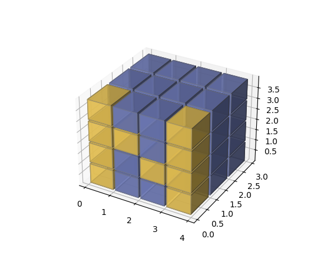

mpl_toolkits.mplot3d.axes3d.Axes3D¶
-
class
mpl_toolkits.mplot3d.axes3d.Axes3D(fig, rect=None, *args, azim=- 60, elev=30, sharez=None, proj_type='persp', box_aspect=None, **kwargs)[source]¶ Bases:
matplotlib.axes._axes.Axes3D axes object.
Parameters: - figFigure
The parent figure.
- rect(float, float, float, float)
The
(left, bottom, width, height)axes position.- azimfloat, default: -60
Azimuthal viewing angle.
- elevfloat, default: 30
Elevation viewing angle.
- sharezAxes3D, optional
Other axes to share z-limits with.
- proj_type{'persp', 'ortho'}
The projection type, default 'persp'.
- **kwargs
Other optional keyword arguments:
Property Description adjustable{'box', 'datalim'} agg_filtera filter function, which takes a (m, n, 3) float array and a dpi value, and returns a (m, n, 3) array alphafloat or None anchor2-tuple of floats or {'C', 'SW', 'S', 'SE', ...} animatedbool aspect{'auto'} autoscale_onbool autoscalex_onbool autoscaley_onbool autoscalez_onbool axes_locatorCallable[[Axes, Renderer], Bbox] axisbelowbool or 'line' box_aspect3-tuple of floats or None clip_boxBboxclip_onbool clip_pathPatch or (Path, Transform) or None containsunknown facecoloror fccolor figureFigureframe_onbool gidstr in_layoutbool labelobject navigatebool navigate_modeunknown path_effectsAbstractPathEffectpickerNone or bool or callable position[left, bottom, width, height] or Bboxproj_type{'persp', 'ortho'} prop_cycleunknown rasterization_zorderfloat or None rasterizedbool or None sketch_params(scale: float, length: float, randomness: float) snapbool or None titlestr transformTransformurlstr visiblebool xboundunknown xlabelstr xlim3dor xlimunknown xmarginfloat greater than -0.5 xscale{"linear"} xticklabelsunknown xticksunknown yboundunknown ylabelstr ylim3dor ylimunknown ymarginfloat greater than -0.5 yscale{"linear"} yticklabelsunknown yticksunknown zboundunknown zlabelunknown zlim3dor zlimunknown zmarginunknown zorderfloat zscale{"linear"} zticklabelsunknown zticksunknown
Notes
New in version 1.2.1: The sharez parameter.
-
__init__(fig, rect=None, *args, azim=- 60, elev=30, sharez=None, proj_type='persp', box_aspect=None, **kwargs)[source]¶ Parameters: - figFigure
The parent figure.
- rect(float, float, float, float)
The
(left, bottom, width, height)axes position.- azimfloat, default: -60
Azimuthal viewing angle.
- elevfloat, default: 30
Elevation viewing angle.
- sharezAxes3D, optional
Other axes to share z-limits with.
- proj_type{'persp', 'ortho'}
The projection type, default 'persp'.
- **kwargs
Other optional keyword arguments:
Property Description adjustable{'box', 'datalim'} agg_filtera filter function, which takes a (m, n, 3) float array and a dpi value, and returns a (m, n, 3) array alphafloat or None anchor2-tuple of floats or {'C', 'SW', 'S', 'SE', ...} animatedbool aspect{'auto'} autoscale_onbool autoscalex_onbool autoscaley_onbool autoscalez_onbool axes_locatorCallable[[Axes, Renderer], Bbox] axisbelowbool or 'line' box_aspect3-tuple of floats or None clip_boxBboxclip_onbool clip_pathPatch or (Path, Transform) or None containsunknown facecoloror fccolor figureFigureframe_onbool gidstr in_layoutbool labelobject navigatebool navigate_modeunknown path_effectsAbstractPathEffectpickerNone or bool or callable position[left, bottom, width, height] or Bboxproj_type{'persp', 'ortho'} prop_cycleunknown rasterization_zorderfloat or None rasterizedbool or None sketch_params(scale: float, length: float, randomness: float) snapbool or None titlestr transformTransformurlstr visiblebool xboundunknown xlabelstr xlim3dor xlimunknown xmarginfloat greater than -0.5 xscale{"linear"} xticklabelsunknown xticksunknown yboundunknown ylabelstr ylim3dor ylimunknown ymarginfloat greater than -0.5 yscale{"linear"} yticklabelsunknown yticksunknown zboundunknown zlabelunknown zlim3dor zlimunknown zmarginunknown zorderfloat zscale{"linear"} zticklabelsunknown zticksunknown
Notes
New in version 1.2.1: The sharez parameter.
-
__module__= 'mpl_toolkits.mplot3d.axes3d'¶
-
add_collection3d(col, zs=0, zdir='z')[source]¶ Add a 3D collection object to the plot.
2D collection types are converted to a 3D version by modifying the object and adding z coordinate information.
- Supported are:
- PolyCollection
- LineCollection
- PatchCollection
-
apply_aspect(position=None)[source]¶ Adjust the Axes for a specified data aspect ratio.
Depending on
get_adjustablethis will modify either the Axes box (position) or the view limits. In the former case,get_anchorwill affect the position.See also
matplotlib.axes.Axes.set_aspect- For a description of aspect ratio handling.
matplotlib.axes.Axes.set_adjustable- Set how the Axes adjusts to achieve the required aspect ratio.
matplotlib.axes.Axes.set_anchor- Set the position in case of extra space.
Notes
This is called automatically when each Axes is drawn. You may need to call it yourself if you need to update the Axes position and/or view limits before the Figure is drawn.
-
autoscale(enable=True, axis='both', tight=None)[source]¶ Convenience method for simple axis view autoscaling. See
matplotlib.axes.Axes.autoscale()for full explanation. Note that this function behaves the same, but for all three axes. Therefore, 'z' can be passed for axis, and 'both' applies to all three axes.New in version 1.1.0.
-
autoscale_view(tight=None, scalex=True, scaley=True, scalez=True)[source]¶ Autoscale the view limits using the data limits. See
matplotlib.axes.Axes.autoscale_view()for documentation. Note that this function applies to the 3D axes, and as such adds the scalez to the function arguments.Changed in version 1.1.0: Function signature was changed to better match the 2D version. tight is now explicitly a kwarg and placed first.
Changed in version 1.2.1: This is now fully functional.
-
bar(left, height, zs=0, zdir='z', *args, **kwargs)[source]¶ Add 2D bar(s).
Parameters: - left1D array-like
The x coordinates of the left sides of the bars.
- height1D array-like
The height of the bars.
- zsfloat or 1D array-like
Z coordinate of bars; if a single value is specified, it will be used for all bars.
- zdir{'x', 'y', 'z'}, default: 'z'
When plotting 2D data, the direction to use as z ('x', 'y' or 'z').
- **kwargs
Other arguments are forwarded to
matplotlib.axes.Axes.bar.
Returns: - mpl_toolkits.mplot3d.art3d.Patch3DCollection
-
bar3d(x, y, z, dx, dy, dz, color=None, zsort='average', shade=True, lightsource=None, *args, **kwargs)[source]¶ Generate a 3D barplot.
This method creates three dimensional barplot where the width, depth, height, and color of the bars can all be uniquely set.
Parameters: - x, y, zarray-like
The coordinates of the anchor point of the bars.
- dx, dy, dzfloat or array-like
The width, depth, and height of the bars, respectively.
- colorsequence of colors, optional
The color of the bars can be specified globally or individually. This parameter can be:
- A single color, to color all bars the same color.
- An array of colors of length N bars, to color each bar independently.
- An array of colors of length 6, to color the faces of the bars similarly.
- An array of colors of length 6 * N bars, to color each face independently.
When coloring the faces of the boxes specifically, this is the order of the coloring:
- -Z (bottom of box)
- +Z (top of box)
- -Y
- +Y
- -X
- +X
- zsortstr, optional
The z-axis sorting scheme passed onto
Poly3DCollection- shadebool, default: True
When true, this shades the dark sides of the bars (relative to the plot's source of light).
- lightsource
LightSource The lightsource to use when shade is True.
- **kwargs
Any additional keyword arguments are passed onto
Poly3DCollection.
Returns: - collection
Poly3DCollection A collection of three dimensional polygons representing the bars.
-
can_pan()[source]¶ Return True if this axes supports the pan/zoom button functionality.
3D axes objects do not use the pan/zoom button.
-
can_zoom()[source]¶ Return True if this axes supports the zoom box button functionality.
3D axes objects do not use the zoom box button.
-
contour(X, Y, Z, *args, extend3d=False, stride=5, zdir='z', offset=None, **kwargs)[source]¶ Create a 3D contour plot.
Parameters: - X, Y, Zarray-like
Input data.
- extend3dbool, default: False
Whether to extend contour in 3D.
- strideint
Step size for extending contour.
- zdir{'x', 'y', 'z'}, default: 'z'
The direction to use.
- offsetfloat, optional
If specified, plot a projection of the contour lines at this position in a plane normal to zdir.
- *args, **kwargs
Other arguments are forwarded to
matplotlib.axes.Axes.contour.
Returns: - matplotlib.contour.QuadContourSet
-
contour3D(X, Y, Z, *args, extend3d=False, stride=5, zdir='z', offset=None, **kwargs)¶ Create a 3D contour plot.
Parameters: - X, Y, Zarray-like
Input data.
- extend3dbool, default: False
Whether to extend contour in 3D.
- strideint
Step size for extending contour.
- zdir{'x', 'y', 'z'}, default: 'z'
The direction to use.
- offsetfloat, optional
If specified, plot a projection of the contour lines at this position in a plane normal to zdir.
- *args, **kwargs
Other arguments are forwarded to
matplotlib.axes.Axes.contour.
Returns: - matplotlib.contour.QuadContourSet
-
contourf(X, Y, Z, *args, zdir='z', offset=None, **kwargs)[source]¶ Create a 3D filled contour plot.
Parameters: - X, Y, Zarray-like
Input data.
- zdir{'x', 'y', 'z'}, default: 'z'
The direction to use.
- offsetfloat, optional
If specified, plot a projection of the contour lines at this position in a plane normal to zdir.
- *args, **kwargs
Other arguments are forwarded to
matplotlib.axes.Axes.contourf.
Returns: - matplotlib.contour.QuadContourSet
Notes
New in version 1.1.0: The zdir and offset parameters.
-
contourf3D(X, Y, Z, *args, zdir='z', offset=None, **kwargs)¶ Create a 3D filled contour plot.
Parameters: - X, Y, Zarray-like
Input data.
- zdir{'x', 'y', 'z'}, default: 'z'
The direction to use.
- offsetfloat, optional
If specified, plot a projection of the contour lines at this position in a plane normal to zdir.
- *args, **kwargs
Other arguments are forwarded to
matplotlib.axes.Axes.contourf.
Returns: - matplotlib.contour.QuadContourSet
Notes
New in version 1.1.0: The zdir and offset parameters.
-
convert_zunits(z)[source]¶ For artists in an axes, if the zaxis has units support, convert z using zaxis unit type
New in version 1.2.1.
-
draw(renderer)[source]¶ Draw the Artist (and its children) using the given renderer.
This has no effect if the artist is not visible (
Artist.get_visiblereturns False).Parameters: - renderer
RendererBasesubclass.
Notes
This method is overridden in the Artist subclasses.
- renderer
-
format_coord(xd, yd)[source]¶ Given the 2D view coordinates attempt to guess a 3D coordinate. Looks for the nearest edge to the point and then assumes that the point is at the same z location as the nearest point on the edge.
-
format_zdata(z)[source]¶ Return z string formatted. This function will use the
fmt_zdataattribute if it is callable, else will fall back on the zaxis major formatter
-
get_autoscale_on()[source]¶ Get whether autoscaling is applied for all axes on plot commands
New in version 1.1.0: This function was added, but not tested. Please report any bugs.
-
get_autoscalez_on()[source]¶ Get whether autoscaling for the z-axis is applied on plot commands
New in version 1.1.0: This function was added, but not tested. Please report any bugs.
-
get_tightbbox(renderer, call_axes_locator=True, bbox_extra_artists=None, *, for_layout_only=False)[source]¶ Return the tight bounding box of the axes, including axis and their decorators (xlabel, title, etc).
Artists that have
artist.set_in_layout(False)are not included in the bbox.Parameters: - renderer
RendererBasesubclass renderer that will be used to draw the figures (i.e.
fig.canvas.get_renderer())- bbox_extra_artistslist of
ArtistorNone List of artists to include in the tight bounding box. If
None(default), then all artist children of the axes are included in the tight bounding box.- call_axes_locatorbool, default: True
If call_axes_locator is
False, it does not call the_axes_locatorattribute, which is necessary to get the correct bounding box.call_axes_locator=Falsecan be used if the caller is only interested in the relative size of the tightbbox compared to the axes bbox.- for_layout_onlydefault: False
The bounding box will not include the x-extent of the title and the xlabel, or the y-extent of the ylabel.
Returns: BboxBaseBounding box in figure pixel coordinates.
- renderer
-
get_xlim()¶ Alias for
get_xlim3d.
-
get_xlim3d()[source]¶ Return the x-axis view limits.
Returns: - left, right(float, float)
The current x-axis limits in data coordinates.
See also
set_xlimset_xbound,get_xboundinvert_xaxis,xaxis_inverted
Notes
The x-axis may be inverted, in which case the left value will be greater than the right value.
Changed in version 1.1.0: This function now correctly refers to the 3D x-limits
-
get_ylim()¶ Alias for
get_ylim3d.
-
get_ylim3d()[source]¶ Return the y-axis view limits.
Returns: - bottom, top(float, float)
The current y-axis limits in data coordinates.
See also
set_ylimset_ybound,get_yboundinvert_yaxis,yaxis_inverted
Notes
The y-axis may be inverted, in which case the bottom value will be greater than the top value.
Changed in version 1.1.0: This function now correctly refers to the 3D y-limits.
-
get_zbound()[source]¶ Return the lower and upper z-axis bounds, in increasing order.
New in version 1.1.0.
-
get_zlabel()[source]¶ Get the z-label text string.
New in version 1.1.0: This function was added, but not tested. Please report any bugs.
-
get_zlim()¶ Alias for
get_zlim3d.
-
get_zticklabels(minor=False, which=None)¶ Get the zaxis' tick labels.
Parameters: - minorbool
Whether to return the minor or the major ticklabels.
- whichNone, ('minor', 'major', 'both')
Overrides minor.
Selects which ticklabels to return
Returns: - list of
Text
Notes
The tick label strings are not populated until a
drawmethod has been called.
-
get_zticks(*, minor=False)¶ Return the zaxis' tick locations in data coordinates.
-
grid(b=True, **kwargs)[source]¶ Set / unset 3D grid.
Note
Currently, this function does not behave the same as
matplotlib.axes.Axes.grid(), but it is intended to eventually support that behavior.New in version 1.1.0.
-
invert_zaxis()[source]¶ Invert the z-axis.
New in version 1.1.0: This function was added, but not tested. Please report any bugs.
-
locator_params(axis='both', tight=None, **kwargs)[source]¶ Convenience method for controlling tick locators.
See
matplotlib.axes.Axes.locator_params()for full documentation. Note that this is for Axes3D objects, therefore, setting axis to 'both' will result in the parameters being set for all three axes. Also, axis can also take a value of 'z' to apply parameters to the z axis.New in version 1.1.0: This function was added, but not tested. Please report any bugs.
-
margins(*margins, x=None, y=None, z=None, tight=True)[source]¶ Convenience method to set or retrieve autoscaling margins.
Call signatures:
margins()
returns xmargin, ymargin, zmargin
margins(margin) margins(xmargin, ymargin, zmargin) margins(x=xmargin, y=ymargin, z=zmargin) margins(..., tight=False)
All forms above set the xmargin, ymargin and zmargin parameters. All keyword parameters are optional. A single positional argument specifies xmargin, ymargin and zmargin. Passing both positional and keyword arguments for xmargin, ymargin, and/or zmargin is invalid.
The tight parameter is passed to
autoscale_view(), which is executed after a margin is changed; the default here is True, on the assumption that when margins are specified, no additional padding to match tick marks is usually desired. Setting tight to None will preserve the previous setting.Specifying any margin changes only the autoscaling; for example, if xmargin is not None, then xmargin times the X data interval will be added to each end of that interval before it is used in autoscaling.
New in version 1.1.0.
-
mouse_init(rotate_btn=1, zoom_btn=3)[source]¶ Set the mouse buttons for 3D rotation and zooming.
Parameters: - rotate_btnint or list of int, default: 1
The mouse button or buttons to use for 3D rotation of the axes.
- zoom_btnint or list of int, default: 3
The mouse button or buttons to use to zoom the 3D axes.
-
name= '3d'¶
-
plot(xs, ys, *args, zdir='z', **kwargs)[source]¶ Plot 2D or 3D data.
Parameters: - xs1D array-like
x coordinates of vertices.
- ys1D array-like
y coordinates of vertices.
- zsfloat or 1D array-like
z coordinates of vertices; either one for all points or one for each point.
- zdir{'x', 'y', 'z'}, default: 'z'
When plotting 2D data, the direction to use as z ('x', 'y' or 'z').
- **kwargs
Other arguments are forwarded to
matplotlib.axes.Axes.plot.
-
plot3D(xs, ys, *args, zdir='z', **kwargs)¶ Plot 2D or 3D data.
Parameters: - xs1D array-like
x coordinates of vertices.
- ys1D array-like
y coordinates of vertices.
- zsfloat or 1D array-like
z coordinates of vertices; either one for all points or one for each point.
- zdir{'x', 'y', 'z'}, default: 'z'
When plotting 2D data, the direction to use as z ('x', 'y' or 'z').
- **kwargs
Other arguments are forwarded to
matplotlib.axes.Axes.plot.
-
plot_surface(X, Y, Z, *args, norm=None, vmin=None, vmax=None, lightsource=None, **kwargs)[source]¶ Create a surface plot.
By default it will be colored in shades of a solid color, but it also supports color mapping by supplying the cmap argument.
Note
The rcount and ccount kwargs, which both default to 50, determine the maximum number of samples used in each direction. If the input data is larger, it will be downsampled (by slicing) to these numbers of points.
Note
To maximize rendering speed consider setting rstride and cstride to divisors of the number of rows minus 1 and columns minus 1 respectively. For example, given 51 rows rstride can be any of the divisors of 50.
Similarly, a setting of rstride and cstride equal to 1 (or rcount and ccount equal the number of rows and columns) can use the optimized path.
Parameters: - X, Y, Z2d arrays
Data values.
- rcount, ccountint
Maximum number of samples used in each direction. If the input data is larger, it will be downsampled (by slicing) to these numbers of points. Defaults to 50.
New in version 2.0.
- rstride, cstrideint
Downsampling stride in each direction. These arguments are mutually exclusive with rcount and ccount. If only one of rstride or cstride is set, the other defaults to 10.
'classic' mode uses a default of
rstride = cstride = 10instead of the new default ofrcount = ccount = 50.- colorcolor-like
Color of the surface patches.
- cmapColormap
Colormap of the surface patches.
- facecolorsarray-like of colors.
Colors of each individual patch.
- normNormalize
Normalization for the colormap.
- vmin, vmaxfloat
Bounds for the normalization.
- shadebool, default: True
Whether to shade the facecolors. Shading is always disabled when cmap is specified.
- lightsource
LightSource The lightsource to use when shade is True.
- **kwargs
Other arguments are forwarded to
Poly3DCollection.
-
plot_trisurf(*args, color=None, norm=None, vmin=None, vmax=None, lightsource=None, **kwargs)[source]¶ Plot a triangulated surface.
The (optional) triangulation can be specified in one of two ways; either:
plot_trisurf(triangulation, ...)
where triangulation is a
Triangulationobject, or:plot_trisurf(X, Y, ...) plot_trisurf(X, Y, triangles, ...) plot_trisurf(X, Y, triangles=triangles, ...)
in which case a Triangulation object will be created. See
Triangulationfor a explanation of these possibilities.The remaining arguments are:
plot_trisurf(..., Z)
where Z is the array of values to contour, one per point in the triangulation.
Parameters: - X, Y, Zarray-like
Data values as 1D arrays.
- color
Color of the surface patches.
- cmap
A colormap for the surface patches.
- normNormalize
An instance of Normalize to map values to colors.
- vmin, vmaxfloat, default: None
Minimum and maximum value to map.
- shadebool, default: True
Whether to shade the facecolors. Shading is always disabled when cmap is specified.
- lightsource
LightSource The lightsource to use when shade is True.
- **kwargs
All other arguments are passed on to
Poly3DCollection
Examples
(Source code, png, pdf)

(Source code, png, pdf)

New in version 1.2.0.
-
plot_wireframe(X, Y, Z, *args, **kwargs)[source]¶ Plot a 3D wireframe.
Note
The rcount and ccount kwargs, which both default to 50, determine the maximum number of samples used in each direction. If the input data is larger, it will be downsampled (by slicing) to these numbers of points.
Parameters: - X, Y, Z2d arrays
Data values.
- rcount, ccountint
Maximum number of samples used in each direction. If the input data is larger, it will be downsampled (by slicing) to these numbers of points. Setting a count to zero causes the data to be not sampled in the corresponding direction, producing a 3D line plot rather than a wireframe plot. Defaults to 50.
New in version 2.0.
- rstride, cstrideint
Downsampling stride in each direction. These arguments are mutually exclusive with rcount and ccount. If only one of rstride or cstride is set, the other defaults to 1. Setting a stride to zero causes the data to be not sampled in the corresponding direction, producing a 3D line plot rather than a wireframe plot.
'classic' mode uses a default of
rstride = cstride = 1instead of the new default ofrcount = ccount = 50.- **kwargs
Other arguments are forwarded to
Line3DCollection.
-
quiver(X, Y, Z, U, V, W, /, length=1, arrow_length_ratio=0.3, pivot='tail', normalize=False, **kwargs)[source]¶ Plot a 3D field of arrows.
The arguments could be array-like or scalars, so long as they they can be broadcast together. The arguments can also be masked arrays. If an element in any of argument is masked, then that corresponding quiver element will not be plotted.
Parameters: - X, Y, Zarray-like
The x, y and z coordinates of the arrow locations (default is tail of arrow; see pivot kwarg).
- U, V, Warray-like
The x, y and z components of the arrow vectors.
- lengthfloat, default: 1
The length of each quiver.
- arrow_length_ratiofloat, default: 0.3
The ratio of the arrow head with respect to the quiver.
- pivot{'tail', 'middle', 'tip'}, default: 'tail'
The part of the arrow that is at the grid point; the arrow rotates about this point, hence the name pivot.
- normalizebool, default: False
Whether all arrows are normalized to have the same length, or keep the lengths defined by u, v, and w.
- **kwargs
Any additional keyword arguments are delegated to
LineCollection
-
quiver3D(X, Y, Z, U, V, W, /, length=1, arrow_length_ratio=0.3, pivot='tail', normalize=False, **kwargs)¶ Plot a 3D field of arrows.
The arguments could be array-like or scalars, so long as they they can be broadcast together. The arguments can also be masked arrays. If an element in any of argument is masked, then that corresponding quiver element will not be plotted.
Parameters: - X, Y, Zarray-like
The x, y and z coordinates of the arrow locations (default is tail of arrow; see pivot kwarg).
- U, V, Warray-like
The x, y and z components of the arrow vectors.
- lengthfloat, default: 1
The length of each quiver.
- arrow_length_ratiofloat, default: 0.3
The ratio of the arrow head with respect to the quiver.
- pivot{'tail', 'middle', 'tip'}, default: 'tail'
The part of the arrow that is at the grid point; the arrow rotates about this point, hence the name pivot.
- normalizebool, default: False
Whether all arrows are normalized to have the same length, or keep the lengths defined by u, v, and w.
- **kwargs
Any additional keyword arguments are delegated to
LineCollection
-
scatter(xs, ys, zs=0, zdir='z', s=20, c=None, depthshade=True, *args, **kwargs)[source]¶ Create a scatter plot.
Parameters: - xs, ysarray-like
The data positions.
- zsfloat or array-like, default: 0
The z-positions. Either an array of the same length as xs and ys or a single value to place all points in the same plane.
- zdir{'x', 'y', 'z', '-x', '-y', '-z'}, default: 'z'
The axis direction for the zs. This is useful when plotting 2D data on a 3D Axes. The data must be passed as xs, ys. Setting zdir to 'y' then plots the data to the x-z-plane.
See also Plot 2D data on 3D plot.
- sfloat or array-like, default: 20
The marker size in points**2. Either an array of the same length as xs and ys or a single value to make all markers the same size.
- ccolor, sequence, or sequence of colors, optional
The marker color. Possible values:
- A single color format string.
- A sequence of colors of length n.
- A sequence of n numbers to be mapped to colors using cmap and norm.
- A 2-D array in which the rows are RGB or RGBA.
For more details see the c argument of
scatter.- depthshadebool, default: True
Whether to shade the scatter markers to give the appearance of depth. Each call to
scatter()will perform its depthshading independently.- **kwargs
All other arguments are passed on to
scatter.
Returns: - paths
PathCollection
-
scatter3D(xs, ys, zs=0, zdir='z', s=20, c=None, depthshade=True, *args, **kwargs)¶ Create a scatter plot.
Parameters: - xs, ysarray-like
The data positions.
- zsfloat or array-like, default: 0
The z-positions. Either an array of the same length as xs and ys or a single value to place all points in the same plane.
- zdir{'x', 'y', 'z', '-x', '-y', '-z'}, default: 'z'
The axis direction for the zs. This is useful when plotting 2D data on a 3D Axes. The data must be passed as xs, ys. Setting zdir to 'y' then plots the data to the x-z-plane.
See also Plot 2D data on 3D plot.
- sfloat or array-like, default: 20
The marker size in points**2. Either an array of the same length as xs and ys or a single value to make all markers the same size.
- ccolor, sequence, or sequence of colors, optional
The marker color. Possible values:
- A single color format string.
- A sequence of colors of length n.
- A sequence of n numbers to be mapped to colors using cmap and norm.
- A 2-D array in which the rows are RGB or RGBA.
For more details see the c argument of
scatter.- depthshadebool, default: True
Whether to shade the scatter markers to give the appearance of depth. Each call to
scatter()will perform its depthshading independently.- **kwargs
All other arguments are passed on to
scatter.
Returns: - paths
PathCollection
-
set_anchor(anchor, share=False)[source]¶ Define the anchor location.
The actual drawing area (active position) of the Axes may be smaller than the Bbox (original position) when a fixed aspect is required. The anchor defines where the drawing area will be located within the available space.
Parameters: - anchor2-tuple of floats or {'C', 'SW', 'S', 'SE', ...}
The anchor position may be either:
a sequence (cx, cy). cx and cy may range from 0 to 1, where 0 is left or bottom and 1 is right or top.
a string using cardinal directions as abbreviation:
- 'C' for centered
- 'S' (south) for bottom-center
- 'SW' (south west) for bottom-left
- etc.
Here is an overview of the possible positions:
'NW' 'N' 'NE' 'W' 'C' 'E' 'SW' 'S' 'SE'
- sharebool, default: False
If
True, apply the settings to all shared Axes.
See also
matplotlib.axes.Axes.set_aspect- for a description of aspect handling.
-
set_aspect(aspect, adjustable=None, anchor=None, share=False)[source]¶ Set the aspect ratios.
Axes 3D does not current support any aspect but 'auto' which fills the axes with the data limits.
To simulate having equal aspect in data space, set the ratio of your data limits to match the value of
get_box_aspect. To control box aspect ratios useset_box_aspect.Parameters: - aspect{'auto'}
Possible values:
value description 'auto' automatic; fill the position rectangle with data. - adjustableNone
Currently ignored by Axes3D
If not None, this defines which parameter will be adjusted to meet the required aspect. See
set_adjustablefor further details.- anchorNone or str or 2-tuple of float, optional
If not None, this defines where the Axes will be drawn if there is extra space due to aspect constraints. The most common way to to specify the anchor are abbreviations of cardinal directions:
value description 'C' centered 'SW' lower left corner 'S' middle of bottom edge 'SE' lower right corner etc. See
set_anchorfor further details.- sharebool, default: False
If
True, apply the settings to all shared Axes.
-
set_autoscale_on(b)[source]¶ Set whether autoscaling is applied on plot commands
New in version 1.1.0: This function was added, but not tested. Please report any bugs.
Parameters: - bbool
-
set_autoscalez_on(b)[source]¶ Set whether autoscaling for the z-axis is applied on plot commands
New in version 1.1.0.
Parameters: - bbool
-
set_axis_off()[source]¶ Turn the x- and y-axis off.
This affects the axis lines, ticks, ticklabels, grid and axis labels.
-
set_axis_on()[source]¶ Turn the x- and y-axis on.
This affects the axis lines, ticks, ticklabels, grid and axis labels.
-
set_box_aspect(aspect, *, zoom=1)[source]¶ Set the axes box aspect.
The box aspect is the ratio of height to width in display units for each face of the box when viewed perpendicular to that face. This is not to be confused with the data aspect (which for Axes3D is always 'auto'). The default ratios are 4:4:3 (x:y:z).
To simulate having equal aspect in data space, set the box aspect to match your data range in each dimension.
zoom controls the overall size of the Axes3D in the figure.
Parameters: - aspect3-tuple of floats or None
Changes the physical dimensions of the Axes3D, such that the ratio of the axis lengths in display units is x:y:z.
If None, defaults to 4:4:3
- zoomfloat
Control overall size of the Axes3D in the figure.
-
set_title(label, fontdict=None, loc='center', **kwargs)[source]¶ Set a title for the axes.
Set one of the three available axes titles. The available titles are positioned above the axes in the center, flush with the left edge, and flush with the right edge.
Parameters: - labelstr
Text to use for the title
- fontdictdict
A dictionary controlling the appearance of the title text, the default fontdict is:
{'fontsize': rcParams['axes.titlesize'], 'fontweight': rcParams['axes.titleweight'], 'color': rcParams['axes.titlecolor'], 'verticalalignment': 'baseline', 'horizontalalignment': loc}
- loc{'center', 'left', 'right'}, default:
rcParams["axes.titlelocation"](default:'center') Which title to set.
- yfloat, default:
rcParams["axes.titley"](default:None) Vertical axes loation for the title (1.0 is the top). If None (the default), y is determined automatically to avoid decorators on the axes.
- padfloat, default:
rcParams["axes.titlepad"](default:6.0) The offset of the title from the top of the axes, in points.
Returns: TextThe matplotlib text instance representing the title
Other Parameters:
-
set_xlim(left=None, right=None, emit=True, auto=False, *, xmin=None, xmax=None)¶ Alias for
set_xlim3d.
-
set_xlim3d(left=None, right=None, emit=True, auto=False, *, xmin=None, xmax=None)[source]¶ Set 3D x limits.
See
matplotlib.axes.Axes.set_xlim()for full documentation.
-
set_xscale(value, **kwargs)[source]¶ Set the x-axis scale.
Parameters: - value{"linear"}
The axis scale type to apply. 3D axes currently only support linear scales; other scales yield nonsensical results.
- **kwargs
Keyword arguments are nominally forwarded to the scale class, but none of them is applicable for linear scales.
-
set_ylim(bottom=None, top=None, emit=True, auto=False, *, ymin=None, ymax=None)¶ Alias for
set_ylim3d.
-
set_ylim3d(bottom=None, top=None, emit=True, auto=False, *, ymin=None, ymax=None)[source]¶ Set 3D y limits.
See
matplotlib.axes.Axes.set_ylim()for full documentation.
-
set_yscale(value, **kwargs)[source]¶ Set the y-axis scale.
Parameters: - value{"linear"}
The axis scale type to apply. 3D axes currently only support linear scales; other scales yield nonsensical results.
- **kwargs
Keyword arguments are nominally forwarded to the scale class, but none of them is applicable for linear scales.
-
set_zbound(lower=None, upper=None)[source]¶ Set the lower and upper numerical bounds of the z-axis.
This method will honor axes inversion regardless of parameter order. It will not change the autoscaling setting (
get_autoscalez_on()).New in version 1.1.0.
-
set_zlabel(zlabel, fontdict=None, labelpad=None, **kwargs)[source]¶ Set zlabel. See doc for
set_ylabelfor description.
-
set_zlim(bottom=None, top=None, emit=True, auto=False, *, zmin=None, zmax=None)¶ Alias for
set_zlim3d.
-
set_zlim3d(bottom=None, top=None, emit=True, auto=False, *, zmin=None, zmax=None)[source]¶ Set 3D z limits.
See
matplotlib.axes.Axes.set_ylim()for full documentation
-
set_zmargin(m)[source]¶ Set padding of Z data limits prior to autoscaling.
m times the data interval will be added to each end of that interval before it is used in autoscaling.
accepts: float in range 0 to 1
New in version 1.1.0.
-
set_zscale(value, **kwargs)[source]¶ Set the z-axis scale.
Parameters: - value{"linear"}
The axis scale type to apply. 3D axes currently only support linear scales; other scales yield nonsensical results.
- **kwargs
Keyword arguments are nominally forwarded to the scale class, but none of them is applicable for linear scales.
-
set_zticklabels(labels, *, fontdict=None, minor=False, **kwargs)¶ Set the zaxis' labels with list of string labels.
Warning
This method should only be used after fixing the tick positions using
Axes3D.set_zticks. Otherwise, the labels may end up in unexpected positions.Parameters: - labelslist of str
The label texts.
- fontdictdict, optional
A dictionary controlling the appearance of the ticklabels. The default fontdict is:
{'fontsize': rcParams['axes.titlesize'], 'fontweight': rcParams['axes.titleweight'], 'verticalalignment': 'baseline', 'horizontalalignment': loc}
- minorbool, default: False
Whether to set the minor ticklabels rather than the major ones.
Returns: - list of
Text The labels.
Other Parameters: - **kwargs
Textproperties.
-
set_zticks(ticks, *, minor=False)¶ Set the zaxis' tick locations.
Parameters: - tickslist of floats
List of tick locations.
- minorbool, default: False
If
False, set the major ticks; ifTrue, the minor ticks.
-
text(x, y, z, s, zdir=None, **kwargs)[source]¶ Add text to the plot. kwargs will be passed on to Axes.text, except for the zdir keyword, which sets the direction to be used as the z direction.
-
text2D(x, y, s, fontdict=None, **kwargs)¶ Add text to the axes.
Add the text s to the axes at location x, y in data coordinates.
Parameters: - x, yfloat
The position to place the text. By default, this is in data coordinates. The coordinate system can be changed using the transform parameter.
- sstr
The text.
- fontdictdict, default: None
A dictionary to override the default text properties. If fontdict is None, the defaults are determined by
rcParams.
Returns: Other Parameters: - **kwargs
Textproperties. Other miscellaneous text parameters.
Property Description agg_filtera filter function, which takes a (m, n, 3) float array and a dpi value, and returns a (m, n, 3) array alphafloat or None animatedbool backgroundcolorcolor bboxdict with properties for patches.FancyBboxPatchclip_boxBboxclip_onbool clip_pathPatch or (Path, Transform) or None coloror ccolor containsunknown figureFigurefontfamilyor family{FONTNAME, 'serif', 'sans-serif', 'cursive', 'fantasy', 'monospace'} fontpropertiesor font or font_propertiesfont_manager.FontPropertiesorstrorpathlib.Pathfontsizeor sizefloat or {'xx-small', 'x-small', 'small', 'medium', 'large', 'x-large', 'xx-large'} fontstretchor stretch{a numeric value in range 0-1000, 'ultra-condensed', 'extra-condensed', 'condensed', 'semi-condensed', 'normal', 'semi-expanded', 'expanded', 'extra-expanded', 'ultra-expanded'} fontstyleor style{'normal', 'italic', 'oblique'} fontvariantor variant{'normal', 'small-caps'} fontweightor weight{a numeric value in range 0-1000, 'ultralight', 'light', 'normal', 'regular', 'book', 'medium', 'roman', 'semibold', 'demibold', 'demi', 'bold', 'heavy', 'extra bold', 'black'} gidstr horizontalalignmentor ha{'center', 'right', 'left'} in_layoutbool labelobject linespacingfloat (multiple of font size) multialignmentor ma{'left', 'right', 'center'} path_effectsAbstractPathEffectpickerNone or bool or callable position(float, float) rasterizedbool or None rotationfloat or {'vertical', 'horizontal'} rotation_mode{None, 'default', 'anchor'} sketch_params(scale: float, length: float, randomness: float) snapbool or None textobject transformTransformurlstr usetexbool or None verticalalignmentor va{'center', 'top', 'bottom', 'baseline', 'center_baseline'} visiblebool wrapbool xfloat yfloat zorderfloat
Examples
Individual keyword arguments can be used to override any given parameter:
>>> text(x, y, s, fontsize=12)
The default transform specifies that text is in data coords, alternatively, you can specify text in axis coords ((0, 0) is lower-left and (1, 1) is upper-right). The example below places text in the center of the axes:
>>> text(0.5, 0.5, 'matplotlib', horizontalalignment='center', ... verticalalignment='center', transform=ax.transAxes)
You can put a rectangular box around the text instance (e.g., to set a background color) by using the keyword bbox. bbox is a dictionary of
Rectangleproperties. For example:>>> text(x, y, s, bbox=dict(facecolor='red', alpha=0.5))
-
text3D(x, y, z, s, zdir=None, **kwargs)¶ Add text to the plot. kwargs will be passed on to Axes.text, except for the zdir keyword, which sets the direction to be used as the z direction.
-
tick_params(axis='both', **kwargs)[source]¶ Convenience method for changing the appearance of ticks and tick labels.
See
matplotlib.axes.Axes.tick_params()for more complete documentation.The only difference is that setting axis to 'both' will mean that the settings are applied to all three axes. Also, the axis parameter also accepts a value of 'z', which would mean to apply to only the z-axis.
Also, because of how Axes3D objects are drawn very differently from regular 2D axes, some of these settings may have ambiguous meaning. For simplicity, the 'z' axis will accept settings as if it was like the 'y' axis.
Note
Axes3D currently ignores some of these settings.
New in version 1.1.0.
-
tricontour(*args, extend3d=False, stride=5, zdir='z', offset=None, **kwargs)[source]¶ Create a 3D contour plot.
Changed in version 1.3.0: Added support for custom triangulations
Note
This method currently produces incorrect output due to a longstanding bug in 3D PolyCollection rendering.
Parameters: - X, Y, Zarray-like
Input data.
- extend3dbool, default: False
Whether to extend contour in 3D.
- strideint
Step size for extending contour.
- zdir{'x', 'y', 'z'}, default: 'z'
The direction to use.
- offsetfloat, optional
If specified, plot a projection of the contour lines at this position in a plane normal to zdir.
- *args, **kwargs
Other arguments are forwarded to
matplotlib.axes.Axes.tricontour.
Returns: - matplotlib.tri.tricontour.TriContourSet
-
tricontourf(*args, zdir='z', offset=None, **kwargs)[source]¶ Create a 3D filled contour plot.
Note
This method currently produces incorrect output due to a longstanding bug in 3D PolyCollection rendering.
Parameters: - X, Y, Zarray-like
Input data.
- zdir{'x', 'y', 'z'}, default: 'z'
The direction to use.
- offsetfloat, optional
If specified, plot a projection of the contour lines at this position in a plane normal to zdir.
- *args, **kwargs
Other arguments are forwarded to
matplotlib.axes.Axes.tricontourf.
Returns: - matplotlib.tri.tricontour.TriContourSet
Notes
New in version 1.1.0: The zdir and offset parameters.
Changed in version 1.3.0: Added support for custom triangulations
-
update_datalim(xys, **kwargs)[source]¶ Extend the
dataLimBbox to include the given points.If no data is set currently, the Bbox will ignore its limits and set the bound to be the bounds of the xydata (xys). Otherwise, it will compute the bounds of the union of its current data and the data in xys.
Parameters: - xys2D array-like
The points to include in the data limits Bbox. This can be either a list of (x, y) tuples or a Nx2 array.
- updatex, updateybool, default: True
Whether to update the x/y limits.
-
view_init(elev=None, azim=None)[source]¶ Set the elevation and azimuth of the axes in degrees (not radians).
This can be used to rotate the axes programmatically.
'elev' stores the elevation angle in the z plane (in degrees). 'azim' stores the azimuth angle in the (x, y) plane (in degrees).
if 'elev' or 'azim' are None (default), then the initial value is used which was specified in the
Axes3Dconstructor.
-
voxels([x, y, z, ]/, filled, facecolors=None, edgecolors=None, **kwargs)[source]¶ Plot a set of filled voxels
All voxels are plotted as 1x1x1 cubes on the axis, with
filled[0, 0, 0]placed with its lower corner at the origin. Occluded faces are not plotted.New in version 2.1.
Parameters: - filled3D np.array of bool
A 3d array of values, with truthy values indicating which voxels to fill
- x, y, z3D np.array, optional
The coordinates of the corners of the voxels. This should broadcast to a shape one larger in every dimension than the shape of filled. These can be used to plot non-cubic voxels.
If not specified, defaults to increasing integers along each axis, like those returned by
indices(). As indicated by the/in the function signature, these arguments can only be passed positionally.- facecolors, edgecolorsarray-like, optional
The color to draw the faces and edges of the voxels. Can only be passed as keyword arguments. This parameter can be:
- A single color value, to color all voxels the same color. This can be either a string, or a 1D rgb/rgba array
None, the default, to use a single color for the faces, and the style default for the edges.- A 3D ndarray of color names, with each item the color for the corresponding voxel. The size must match the voxels.
- A 4D ndarray of rgb/rgba data, with the components along the last axis.
- shadebool, default: True
Whether to shade the facecolors. Shading is always disabled when cmap is specified.
New in version 3.1.
- lightsource
LightSource The lightsource to use when shade is True.
New in version 3.1.
- **kwargs
Additional keyword arguments to pass onto
Poly3DCollection.
Returns: - facesdict
A dictionary indexed by coordinate, where
faces[i, j, k]is aPoly3DCollectionof the faces drawn for the voxelfilled[i, j, k]. If no faces were drawn for a given voxel, either because it was not asked to be drawn, or it is fully occluded, then(i, j, k) not in faces.
Examples
(Source code, png, pdf)

(Source code, png, pdf)

(Source code, png, pdf)

(Source code, png, pdf)

-
property
w_xaxis¶
-
property
w_yaxis¶
-
property
w_zaxis¶
-
zaxis_date(tz=None)¶ Sets up axis ticks and labels to treat data along the zaxis as dates.
Parameters: - tzstr or
datetime.tzinfo, default:rcParams["timezone"](default:'UTC') The timezone used to create date labels.
- tzstr or
{kind=link}
{kind=link}
{kind=link}
{kind=link}
{kind=link}
{kind=link}